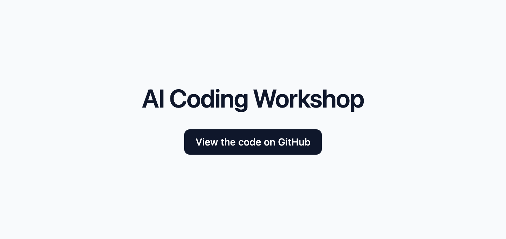

No coding experience needed. Just curiosity.
1
The big picture
What AI is, and what it’s bad at.
2
The problem
How to work with something that is sometimes wrong.
3
What we build today
A web app, and the starter kit under it.
4
Plan and send
You write a plan and hand it to the AI.
5
While it builds
What the AI is doing on your screen.
6
Look and refine
You try your app, improve it and show it.
First I talk, for about 25 minutes. Then you build.
Part 1 of 6 · The big picture
I’m not joking. And the agents keep working while I sleep.
The catch: you need to know what to ask for, and how to check you got it.
Part 1 of 6 · The big picture
It sees
“The cat sat on the …”
It guesses the next word. Again and again.
Its guesses
mat
62%
sofa
18%
floor
11%
moon
1%
Trained on books, websites and code.
One trick, repeated: essays, answers, software.
Part 1 of 6 · The big picture
Part 1 of 6 · The big picture
Code is just text
An app is written instructions.
Text is what AI writes
It’s the thing it does best.
And code can be checked
Run it, and you know if it works.
A guess you can check is a guess you can fix.
Part 1 of 6 · The big picture
2022 · Ask
You ask, it answers. You do the work.
2023 · Copy & paste
It writes code. You copy it and hope.
Now · Agents
It works in your project: writes, runs, checks, fixes.
An agent is the same LLM with tools, working until the job is done.
Part 1 of 6 · The big picture
Hallucination
Makes things up. Says “done” when it isn’t.
Drift
Slowly moves away from what you asked.
Context rot
Long chats bury what you said at the start.
Untested
Never ran, or only ran on your laptop.
Part 1 of 6 · The big picture
A vague brief
“Make me a booking page.”
Ten experts, ten different apps.
A clear brief
“Members book one of three rooms per hour. Nobody can double-book. Write the tests first.”
One app: the one you wanted.
Whatever you leave out, they decide for you.
Part 2 of 6 · The problem
Part 2 of 6 · The problem
Hallucination
Checkers and tests.
Drift
A written plan. Tests first.
Context rot
House rules in a file.
Untested
The same box on every laptop.
Part 2 of 6 · The problem
You
Set up checks, rules, tools.
You
Write a detailed plan.
AI
Writes the code, checking as it goes.
You
Look, judge, decide.
The plan and the checks are the job now. The typing isn’t.
Part 3 of 6 · What we build today
You describe what you want. The AI builds it. We check that it really works.
Part 3 of 6 · What we build today
1
The big picture
2
The problem
3
What we build today
4
Plan and send
5
While it builds
6
Look and refine
We’ve seen the big picture. Now we zoom in.
Part 3 of 6 · What we build today
A poster. The same for everyone.
A program. It knows you, remembers, and works for you.
Your Gmail isn’t my Gmail. That program behind the page is what we build.
Part 3 of 6 · What we build today
Frontend
The page you see and click.
API
Backend
Does the work. Keeps the secret keys.
Queries
Database
Keeps things until tomorrow.
The API is the waiter: fixed orders, fixed answers.
Part 3 of 6 · What we build today
“Make me an app” works the first time. The tenth change is where things quietly break.
Foundations
The app already runs, the same on every laptop.
Utilities
Database, AI and email, ready.
Inspector
Checks every change. Points at the file and line.
Part 3 of 6 · What we build today
1
You describe what you want
2
The AI writes the code
3
Automatic checks run, in seconds
4
The AI reads what they found and fixes it
Repeats by itself until every check passes
Then it looks at the page, a second AI reviews, and you decide.
Part 4 of 6 · Plan and send
What
Who uses it, and what they can do.
With what
Which tools it uses: database, email, AI.
How
Who may see or change what.
Proof
Which tests to write first.
Every detail you decide is one the AI doesn’t have to guess.
Part 4 of 6 · Plan and send
On the drawing
Who logs in, where data lives: cheap to decide now.
After it’s built
Changing the login later touches dozens of files.
AI makes building fast. It doesn’t make rebuilding free.
Part 4 of 6 · Plan and send
Warm-up
Visitors leave a message for everyone.
Medium
The AI writes questions; you play them.
Medium
Jot notes; the AI summarises them.
Stretch
Collect items, email a weekly summary.
Or bring a small problem from your own work.
Part 4 of 6 · Plan and send
Live: one small feature, from prompt to working page.
Part 4 of 6 · Plan and send
1
Get the starter
Open the GitHub link and press Use this template
2
Write your plan
What, with what, how, proof.
3
Send it
Paste it into Claude Code. Press enter.
Part 4 of 6 · Plan and send
While your AI works, we keep going. Peek at your screen now and then.
Part 5 of 6 · While it builds
1
Reads the house rules
The rulebook in the project.
2
Writes the tests
FAILED They fail first. Red is good.
3
Writes the code
The part people used to type by hand.
4
Runs the checks
Finds a mistake? Reads it, fixes it.
5
All green
passed Only then does it move on.
6
Opens the page and looks
Like you would.
7
A second AI reviews
Fresh eyes on the changes.
Peek at your screen: which step is yours on?
Part 6 of 6 · Look and refine
Part 6 of 6 · Look and refine
1
Start
make up
Docker starts all three rooms.
2
Open

3
Change it
“Make the button blue.”
The page reloads by itself.
“localhost” means this computer only. Nobody else can see it yet.
Part 6 of 6 · Look and refine
1
Open your app
Does it do what you planned?
2
One change at a time
“Make it look good on a phone.”
3
Something broke?
“The check fails. Fix the first error.”
4
Show & tell
“Ask the reviewer to review my changes.” Then show us.
Part 6 of 6 · Look and refine
Your laptop
Three boxes in Docker. Only you can see it.
The cloud
One box, plus a database. Azure here. Anywhere that runs Docker works.
Everyone
A real https address. Open it on your phone.
The steps are in docs/deploy-azure.md. You can ask the AI to follow them.
Part 6 of 6 · Look and refine
It’s setting up the environment, describing exactly what you want, and checking that you got it.